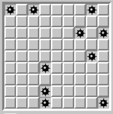
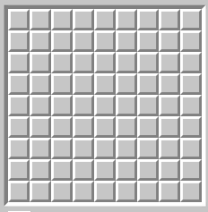
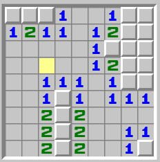

In what concerns the continuous evaluation solving exercises grade during the semester, you should submit until 23:59 of April 14th
(this exercise will still be available for submission after that deadline, but without couting towards your grade)
[to understand the context of this problem, you should read the class #06 exercise sheet]
In this problem you should submit a complete program with the main function, reading with functions such as scanf and printing with functions such as printf.
Joey Tribbiani just discovered Minesweeper, but he has no idea how it works. All he knows is that he has to click somewhere, and he really hopes nothing explodes. To help him, you need to simulate what happens when he makes his first move on the board.
The figures below illustrate an example minesweeper game on a 9 by 9 grid:
|  |  |  | ||
| The (initially secret) position of the bombs |
Initial grid (player doesn't know where the bombs are) |
What the players sees after a first move on the yellow cell |
The Minesweeper rules:
Write a program that, given the location of the bombs and the coordinates of the first move, produces the output of that first move.
The first line contains two positive integers: the number of rows R and columns C that determine the size of the grid.
This is followed by R lines of characters representing the bombs location. Empty cells are represented by '.' and bomb cells by 'B'.
The last line contains two positive integers: the coordinates y and x of the cell selected on the first move (y indicates the row, from 1 to R, where 1 is the top row; x indicates the column, from 1 to C where 1 is the leftmost row).
You must print the output of the first move as previously described (check the example outputs).
The following limits are guaranteed in all the test cases that will be given to your program:
| 1 ≤ R,C ≤ 1000 | Dimensions of the grid | |
| 1 ≤ y ≤ R | y coordinate (row) of the first move | |
| 1 ≤ x ≤ C | x coordinate (column) of the first move |
| Example Input 1 | Example Output 1 |
9 9 B.B....B. ......... ......B.B ......... .......B. ...B..... ......... ...B..... ...B....B 3 4 |
???1..1?? 1211.12?? .....1??? .....12?? ..111.1?? ..1?1.111 ..2?2.... ..2?2..11 ..2?2..1? |
| Example Input 2 | Example Output 2 |
9 9 B.B....B. ......... ......B.B ......... .......B. ...B..... ......... ...B..... ...B....B 1 3 |
??B?????? ????????? ????????? ????????? ????????? ????????? ????????? ????????? ????????? |
| Example Input 3 | Example Output 3 |
9 9 B.B....B. ......... ......B.B ......... .......B. ...B..... ......... ...B..... ...B....B 1 4 |
???1????? ????????? ????????? ????????? ????????? ????????? ????????? ????????? ????????? |